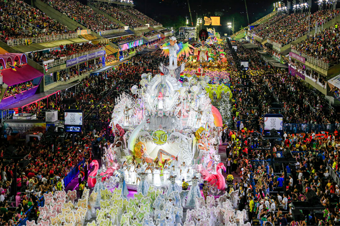
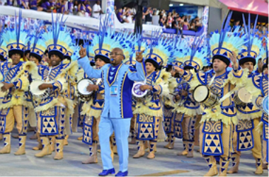
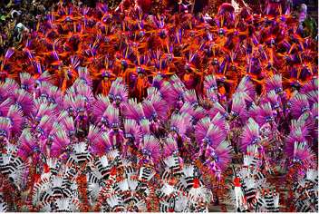
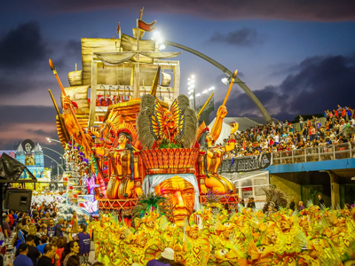
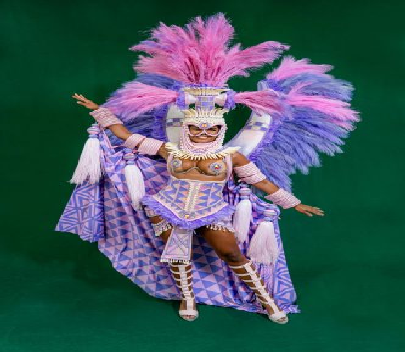
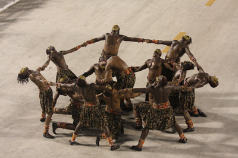
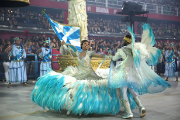

Desfiles das escolas de samba
Como já visto na página anterior,os desfiles começaram com a primeira escola, Deixa Falar (1928),
E o primeiro concurso foi em 1932.
Nos dias atuais, mudançass aconteceram em relação as escolas. Dando as escolas
a devida importancia e reconhecimento do especto cultural e artisticos que merecem.
Os desfiles das escolas de samba do Rio de Janeiro são,se tornaram Patrimônio Cultural do Estado,
por decreto firmado pelo governador, Cláudio Castro, e publicado no Diário Oficial.
Esse decreto garante que os desfiles passem a integrar oficialmente o conjunto de bens culturais protegidos pelo estado, assegurando respaldo institucional às escolas de samba, aos profissionais do setor e a toda a cadeia produtiva envolvida na realização do espetáculo.

Ver mais dessa matéria, clicando aqui
Competições atualmente
Todos os anos, a competição fica mais acirrada. As escolas de samba do grupo especial têm entre 70 e 80 minutos para realizar seu desfile no Sambódromo. As escolas competidoras da Série Ouro, dão o seu melhor e fazem desfiles empolgantes na esperança de se juntarem ao grupo das melhores competidoras. Uma seleção de doze escolas de samba, o famoso Grupo Especial disputa durante três dias para vencer a competição.
O domingo, a segunda-feira e a terça-feira de Carnaval são os destaques do evento com o Grupo Especial realizando o espetáculo grandioso, que é visto por milhões ao redor do mundo. Quatro das melhores escolas de samba desfilam no domingo, outras quatro na segunda e as outras quatro desfilam na terça de Carnaval pelo título de campeã.
A evolução dos desfiles de escolas de samba é uma jornada do amadorismo à profissionalização, ganhando luxo, complexidade técnica (alegorias, fantasias) e grandes estruturas como o Sambódromo a partir dos anos 80, com temas que vão do folclore à crítica social, sempre mantendo a bateria, o samba-enredo e a harmonia como pilares, com o tempo de desfile e os critérios de julgamento se adaptando
A criação da liesa
A Liga Independente das Escolas de Samba do Rio de Janeiro (Liesa) surgiu em 24 de julho de 1984 a partir de uma cisão na Associação das Escolas de Samba da Cidade do Rio de Janeiro (AESCRJ). A criação foi motivada pelo desejo das principais escolas de samba do Grupo Especial de terem mais autonomia, poder de negociação e controle sobre a organização e os lucros do Carnaval. Os representantes das escolas, que investiam quantias significativas na festa, sentiam que eram minoria nas deliberações da AESCRJ e que suas propostas para profissionalizar e melhorar o desfile eram frequentemente rejeitadas.
Tem como objetivo:
Defender os interesses das agremiações da primeira divisão (Grupo Especial) do carnaval carioca.
Buscar mais transparência e profissionalismo na organização dos desfiles,
já que as escolas fundadoras estavam insatisfeitas com a gestão da entidade anterior (AESCRJ).
Os quesitos de julgamento
Bateria

É a manutenção regular e a sustentação da cadência em consonância com o samba-enredo; conjugação dos sons emitidos pelos vários instrumentos; a criatividade e a versatilidade.
Samba-enredo
É a letra e a melodia , respeitando-se a licença poética. A letra poderá ser descritiva ou interpretativa. Em relação à melodia, são avaliadas as características rítmicas próprias do samba; a riqueza melódica,
Harmonia
É o entrosamento entre o ritmo e o canto. A perfeita igualdade do canto do samba-enredo pelos componentes da escola, em consonância com o intérprete e a manutenção de sua tonalidade; pela totalidade da escola.
Evolução

É progresso da dança de acordo com o ritmo do samba e com a cadência mantida pela bateria. Sem correrias e retrocesso e/ou retorno de alas, destaques e/ou alegorias. A espontaneidade, a criatividade, a empolgação e a vibração dos desfilantes; a coesão do desfile, isto é, a manutenção de espaçamento o mais uniforme possível entre alas e alegorias, penalizando, portanto, a abertura de claros (buracos) e a embolação de alas e/ou grupos .
Enredo
Narrativa construída sobre um tema, um conceito ou uma história que é apresentada de forma sequencial, por meio de representações iconográficas como elementos cenográficos (alegorias e adereços) e figurinos (fantasias). São dois subquesitos, concepção e realização. São penalizadas troca de ordem, falta ou presença não prevista em roteiro de alegorias, tripés ou alas.
Alegorias e adereços

Alegorias (entendendo-se, como tal, qualquer elemento cenográfico que esteja sobre rodas, incluindo os tripés) e os adereços (entendendo-se, como tal, qualquer elemento cenográfico que não esteja sobre rodas), exceto os utilizados para a realização das comissões de frente. são dois subquesitos, concepção e realização. Há perda de pontos para a inclusão de qualquer tipo de merchandising, quantidades de alegorias e/ou tripés fora dos limites mínimo ou máximo fixadas pelo regulamento.
Fantasias

É a adequação das fantasias ao enredo as quais devem cumprir a função de representar as diversas partes do conteúdo desse enredo; a capacidade de serem criativas, mas devendo possuir significado dentro do enredo.
Comissão de Frente

A sua capacidade de impactar positivamente o público; a indumentária; o cumprimento da função de saudar o público e apresentar a escola; a coordenação, o sincronismo e a criatividade. A comissão de frente poderá se apresentar a pé ou sobre rodas, trajando fantasias dentro da proposta do enredo ou tradicionalmente.
Mestre-sala e porta-bandeira

Quesito dividido em:
indumentária do casal, verificando sua adequação para a dança e a impressão causada pelas suas formas e acabamentos; beleza e bom gosto.A dança do casal - considerando-se que não “sambam” e sim executam um bailado no ritmo do samba, com passos e características , com meneios, mesuras, giros, meias-voltas e torneados; a harmonia do casal.
A função do mestre-sala é cortejar a porta-bandeira, bem como proteger e apresentar o pavilhão da escola, desenvolvendo gestos e posturas elegantes e corteses, que demonstrem reverência à sua dama. A função da porta-bandeira é conduzir e apresentar o pavilhão da escola, sempre desfraldado e sem enrolá-lo em seu próprio corpo.
A criação da liga Rio Carnaval
A Liga Rio Carnaval surgiu como uma marca da Liesa (Liga Independente das Escolas de Samba do Rio de Janeiro) para os desfiles do Grupo Especial e também como uma nova entidade, a Liga RJ, para o Grupo de Acesso (Série Ouro), após uma cisão na organização anterior.
.Criação da Marca "Rio Carnaval" (2022)
O nome "Rio Carnaval" surgiu como uma estratégia de reposicionamento e identidade visual lançada pela LIESA em fevereiro de 2022.
Objetivo: Modernizar a imagem dos desfiles, transformando o evento em uma marca global reconhecível para além da sigla institucional LIESA.
Design: A marca foi desenvolvida pela agência Tátil Design e passou a ser utilizada oficialmente
em toda a comunicação dos desfiles do Grupo Especial a partir do Carnaval de 2022.
Atualmente, para o Rio Carnaval 2026, a LIESA continua utilizando essa identidade para a venda de ingressos e promoção do evento
na Marquês de Sapucaí.
Para informações oficiais sobre ingressos e desfiles, você pode consultar o site da LIESA.